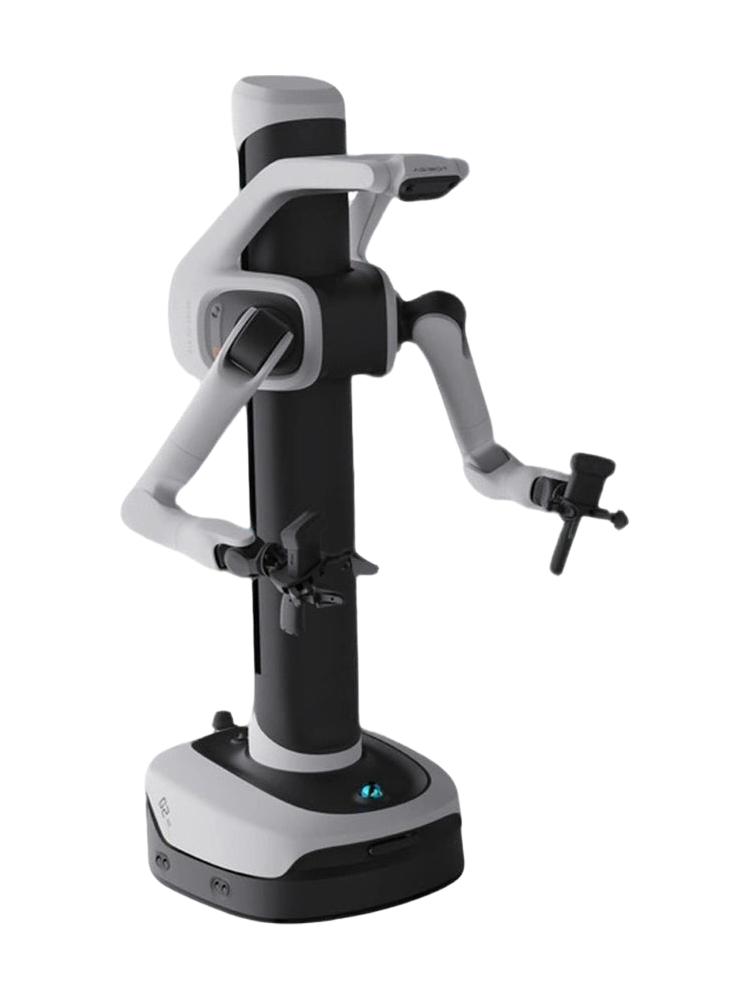

G2 Air
Agibot G2 Air is a wheeled humanoid robot from China, announced 2026.
Sources retrieved: (A)
- Applications
- Indicative price
- Not stated

Manufacturer's own photo.
Specifications
2 of 32 stated 30 not stated
30 fields hidden
How to read the figuresShow guideClose
- not statedNo source
- noStated by a source
- 0Reported as zero
- ASource
- A*Source with a caveat (select it)
- CERecords only what the manufacturer states regarding CE marking.
Select a source marker for source details and notes.
Physical2/13 disclosed
Power0/5 disclosed
Sensing and autonomy0/6 disclosed
Payload and expansion0/3 disclosed
Commercial0/1 disclosed
Compliance & certifications0/4 disclosed
Against the field
Each strip holds every robot of this type in the guide that states the figure, one bar per group of values. Further right means a larger figure, not a better robot. A taller bar means more robots in that group.
Max speed
at least 5.4km/hat least 3.36mphOur conversion from 1.5 m/s. The manufacturer does not state an imperial figure itself, so the conversion has no source of its own.
113 wheeled humanoids state a top speed
G2 Air states a lower limit, not one figure, so it is shown open-ended and not ranked against the others. 21 state only a bound (≥ or ≤) and are not ranked.
Notes
AGIBOT presented G2 Air at its 2026 Partner Conference on 17 April 2026 and describes it as “a compact, highly agile single-arm mobile manipulator designed for light-duty, human-in-the-loop operations”.
The same release gives 7 DOF, a 3 kg payload, a reach of 750-800 mm, a width under 800 mm and speeds of at least 1.5 m/s.
AGIBOT's own store page shows G2 Air, captioned “Commercial service and material handling”, as a column on a wheeled base with two arms with grippers and a camera head, while the April 2026 release calls it a “single-arm mobile manipulator”.
Intended use, per the manufacturer. “well-suited for retail, hospitality, logistics, and structured industrial workflows”
Sources
One line per source, not per figure: a source has one retrieval date.
- Aagibot.com/article/231/detail/63.htmlMain source. Retrieved